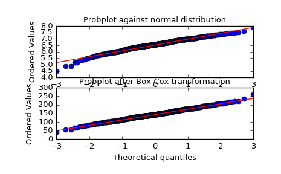

scipy.stats.boxcox¶
-
scipy.stats.boxcox(x, lmbda=None, alpha=None)[source]¶ Return a positive dataset transformed by a Box-Cox power transformation.
Parameters: x : ndarray
Input array. Should be 1-dimensional.
lmbda : {None, scalar}, optional
If lmbda is not None, do the transformation for that value.
If lmbda is None, find the lambda that maximizes the log-likelihood function and return it as the second output argument.
alpha : {None, float}, optional
If
alphais not None, return the100 * (1-alpha)%confidence interval for lmbda as the third output argument. Must be between 0.0 and 1.0.Returns: boxcox : ndarray
Box-Cox power transformed array.
maxlog : float, optional
If the lmbda parameter is None, the second returned argument is the lambda that maximizes the log-likelihood function.
(min_ci, max_ci) : tuple of float, optional
If lmbda parameter is None and
alphais not None, this returned tuple of floats represents the minimum and maximum confidence limits givenalpha.See also
Notes
The Box-Cox transform is given by:
y = (x**lmbda - 1) / lmbda, for lmbda > 0 log(x), for lmbda = 0
boxcoxrequires the input data to be positive. Sometimes a Box-Cox transformation provides a shift parameter to achieve this;boxcoxdoes not. Such a shift parameter is equivalent to adding a positive constant to x before callingboxcox.The confidence limits returned when
alphais provided give the interval where:\[llf(\hat{\lambda}) - llf(\lambda) < \frac{1}{2}\chi^2(1 - \alpha, 1),\]with
llfthe log-likelihood function and \(\chi^2\) the chi-squared function.References
G.E.P. Box and D.R. Cox, “An Analysis of Transformations”, Journal of the Royal Statistical Society B, 26, 211-252 (1964).
Examples
>>> from scipy import stats >>> import matplotlib.pyplot as plt
We generate some random variates from a non-normal distribution and make a probability plot for it, to show it is non-normal in the tails:
>>> fig = plt.figure() >>> ax1 = fig.add_subplot(211) >>> x = stats.loggamma.rvs(5, size=500) + 5 >>> prob = stats.probplot(x, dist=stats.norm, plot=ax1) >>> ax1.set_xlabel('') >>> ax1.set_title('Probplot against normal distribution')
We now use
boxcoxto transform the data so it’s closest to normal:>>> ax2 = fig.add_subplot(212) >>> xt, _ = stats.boxcox(x) >>> prob = stats.probplot(xt, dist=stats.norm, plot=ax2) >>> ax2.set_title('Probplot after Box-Cox transformation')
>>> plt.show()
